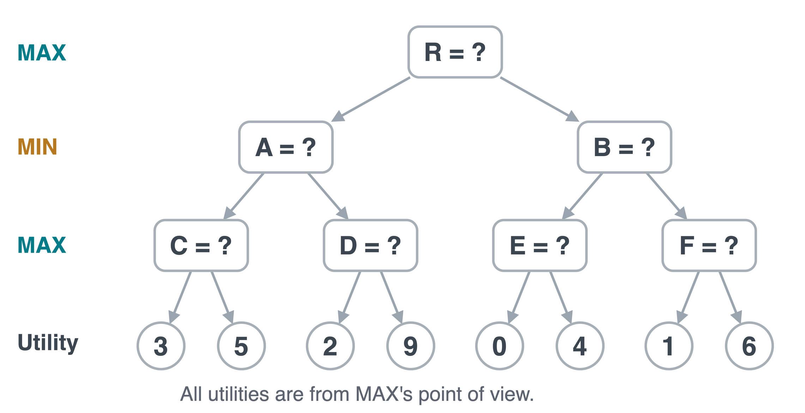
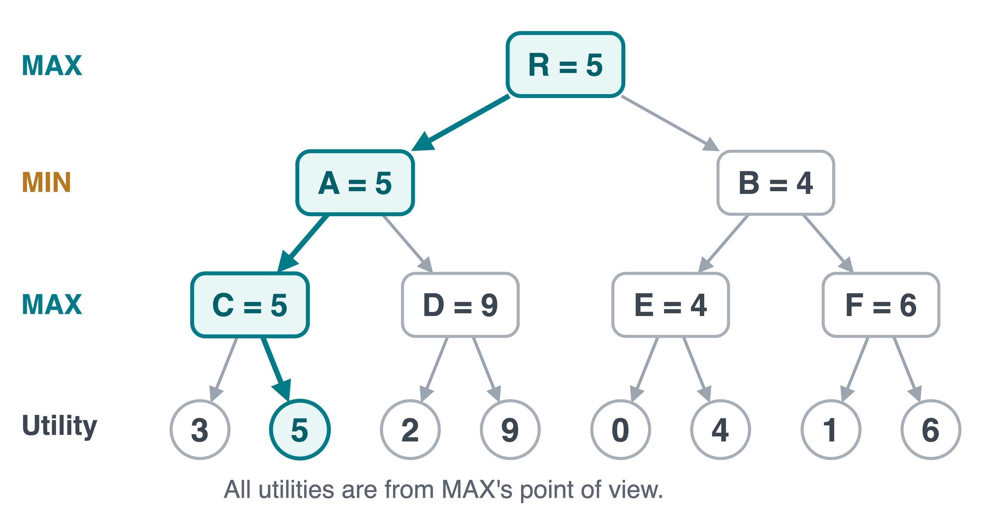

Assume a finite tree, correct game rules, and exact terminal utilities.
At a leaf: the utility is the actual outcome.
At a MAX node: if the child values are correct, MAX can choose the largest.
At a MIN node: MIN can choose the smallest, so MAX cannot count on anything larger.
Repeat the argument from the leaves to the root. Each backed-up value is correct once its children are correct.
Following minimax guarantees MAX at least the root value. This may still mean a win, draw, or loss against optimal play.
Your Turn: Three Decision Levels
Compute C, D, E, F, then A, B, then the root. Which first move should MAX play?


C=5,\ D=9,\ E=4,\ F=6. Then A=5,\ B=4. Root value 5; choose A.
Minimax Pseudocode: Evaluate a State
VALUE(s) evaluates the child states, then returns their maximum if MAX moves or minimum if MIN moves.
VALUE(s)
ifTERMINAL(s): returnUTILITY(s)
ifPLAYER(s) == MAX:
v <- -infinity
forainACTIONS(s):
v <- max(v, VALUE(RESULT(s, a)))
else: # MIN moves
v <- +infinity
forainACTIONS(s):
v <- min(v, VALUE(RESULT(s, a)))
returnv
This child-to-parent calculation is a value backup. Search depth first, then return the parent’s value.
Minimax Pseudocode: Choose an Action
Precondition: the state is nonterminal and MAX moves next.
CHOOSE_MOVE(s)
best_value <- -infinity; best_action <- None
forainACTIONS(s):
value <- VALUE(RESULT(s, a))
ifvalue > best_value:
best_value <- value
best_action <- a
returnbest_action
Whenever a better score appears, store its action too. With >, a tie keeps the first move found.
The recursive function computes scores. The outer loop remembers the move that produced the best score.
Search Cost
Exact search works for tic-tac-toe. For larger games, let b be the branching factor and m the maximum remaining plies.
Time
A full tree has
1+b+\cdots+b^m=O(b^m).
For b=3, m=10: 59,049 leaves and 88,573 total nodes.
Memory
Depth-first evaluation keeps the active recursion path and pending siblings.
O(bm) if each call stores its children.
O(m) if successors are generated one at a time.
You can evaluate a tree without storing all of it. The number of positions examined still grows exponentially.
Terminal Utility and Cutoff Evaluation
Large games may require stopping before a terminal state. Let d count plies still available.
VALUE_LIMITED(s, d):if TERMINAL(s): return UTILITY(s)if d ==0: return EVAL(s)# Otherwise use the same MAX / MIN recursion,# calling VALUE_LIMITED(RESULT(s, a), d - 1).
Leaf type
Returned score
Terminal position
Exact outcomeU(s)
Nonterminal depth cutoff
Estimated value\operatorname{EVAL}(s)
Unlike A*’s remaining-cost estimate, EVAL estimates game value. Heuristic errors can change the move; optimal play is no longer guaranteed.
Takeaways
A game state includes whose turn it is.
MAX takes the maximum; MIN takes the minimum, using one utility viewpoint.
Back up values, then retain the action that achieves the root’s best value.
Exact minimax gives the best worst-case guarantee, but its time cost is exponential.
Can we prove that some branches cannot affect the root’s decision before evaluating all their leaves?
Next lecture: alpha-beta pruning preserves the minimax value while avoiding unnecessary search.